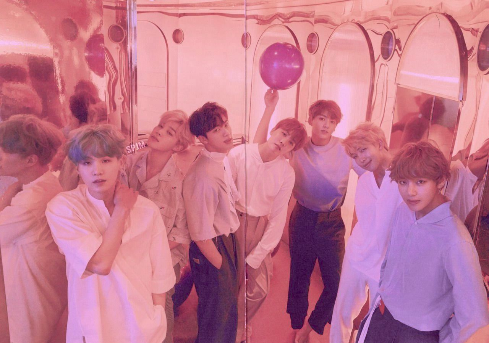

The Korean Wave, or Hallyu, has been spreading globally since the early 2000s, and has led to a surge in interest in K-pop, Korean dramas, and other aspects of Korean culture. Korean pop music, or K-pop, has become a global phenomenon over the past decade, with many K-pop artists gaining a massive following not only in their home country of South Korea but also across the world.
One of the most popular and successful K-pop groups is BTS, which has achieved unprecedented international success in recent years. In 2017, BTS released their album "Love Yourself: Her," which marked a turning point in their career. The album topped charts in South Korea and around the world, and the lead single "DNA" became the first K-pop song to enter the Billboard Hot 100 chart in the US. Since then, BTS has released several successful albums and singles, and has broken numerous records in the music industry.
Anime has seen a surge in popularity in recent years, fueled by the accessibility of streaming services, the global interest in Japanese pop culture, and the power of social media.
The most popular anime of recent years internationally is "Demon Slayer: Kimetsu no Yaiba." Its accompanying movie, "Mugen Train" has broken numerous records since its release in 2019, including becoming the highest-grossing film of all time in Japan, racking in 506.5 million USD.
Chinese media has been steadily increasing in popularity over the past few years, with the international success of Genshin Impact and growing interest in Chinese novels, especially those in the danmei/wuxia genre, and donghua.
Genshin Impact is a video game developed by Chinese company miHoYo, and it has become one of the most popular games in the world since its release in 2020. The game features an expansive open world, a rich storyline, and a diverse cast of characters, many of whom have become fan favorites. Genshin Impact has been praised for its high-quality graphics and immersive gameplay, and it has also been recognized for its representation of diverse cultures and characters.
One of the most successful danmei franchises is "Mo Dao Zu Shi," which started as a novel and has since been adapted into a popular animated series and a live-action drama. The franchise has a large and passionate fanbase both in China and internationally, and has helped to further popularize danmei as a genre.